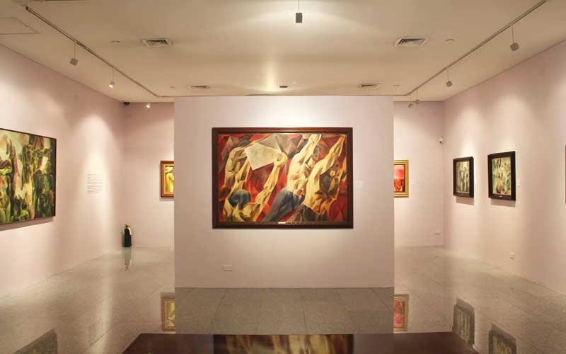

Challenge yourself and your team by solving a mystery while the clock is ticking.
You’ve got 1-hour to successfully unlock the exit or you leave in a cloud of shame.

Ayala Museum
Start out with some thought-provoking exhibits designed by contemporary Filipino artists on the first floor.
As you work your way through the building, you’ll encounter fascinating displays showcasing Filipino history,
culture, tribes, and customs.